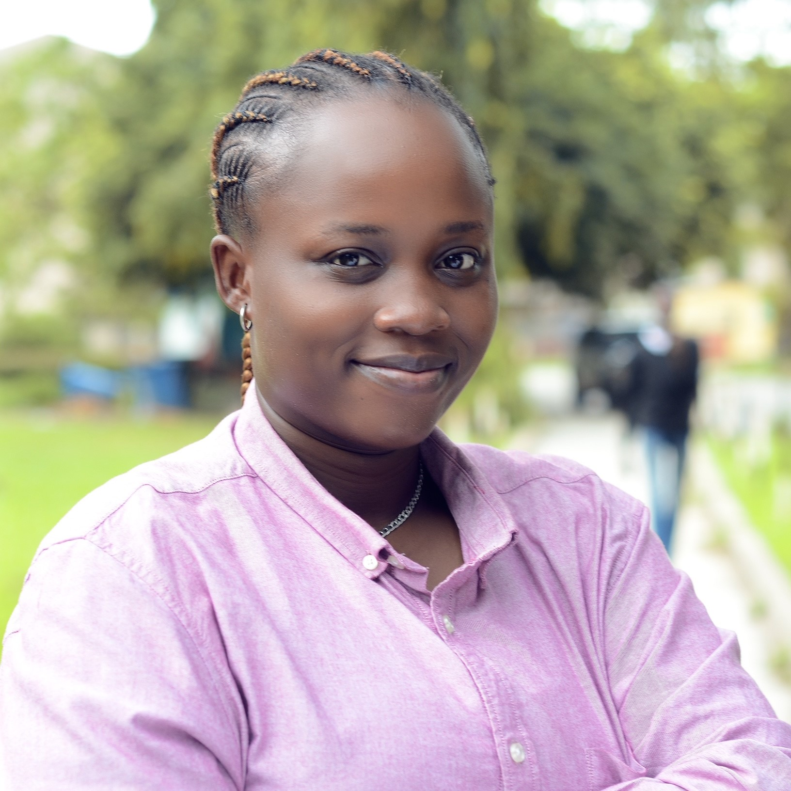

ADELEYE JESUTONI ADEBOLA
PROFESSIONAL SUMMARY
A young and passionate designer with four years of experience who has a
solid history in finding solutions to design issues that focus on energy efficiency, end user
optimization, and thermal comfort in spaces. Highly driven to create ideas that solve problems and are both user friendly and environmentally responsible to lessen the impact of the deteriorating ecology and
continue to raise the bar of living
SKILLS
Professional Skills
- Communication skills
- Teamwork and collaboration
- Time management
- Public speaking and presentation
- Attention to details
- Excellent interpersonal relations
Technical Skills
- Autodesk AUTOCAD
- Autodesk Revit
- Trimble Sketchup
- Chaos Vray for Sketchup
- Adobe Photoshop
- Adobe InDesign
- Figma
- HTML
- CSS
EMPLOYMENT HISTORY
Product Designer (UI/UX)at OATS, Lagos
October 2023- April 2024
- Involved in the creation of user-friendly products for clients
- Ensured products are marketed successfully, remains cost-effective and meets the goals of clients and stakeholders.
Architect at Kenning Homes, Lagos
July 2021- October 2022
- Involved in the design implementation and construction for commercial, retail and residential projects
- Involved in site supervision, material specification, detailed construction drawings, 3-d visualisation and project meeting attendance
Architect/Interior Designer at Ink and Grey Studio, Lagos
October 2020- May 2021
- Design of furniture, involvement in the procurement and sourcing of different building materials
- Conceptualized and sketched design plans for work and living spaces
- Created mood boards for sampling my design vision
Graduate Intern at Kenning Homes, Lagos
October 2020- May 2021
- Worked under supervision as intern gathering knowlege of the architectural field and also providing my input when needed.
Architecture Intern at Kenning Homes, Lagos
June 2018- December 2018
- Involved in the different building design stages (coceptual designs, working drawings and site supervision).
- Learnt to use the basic architectural design software like Revit, AutoCAD
EDUCATION
Master of Environmental Design, University of Lagos, Lagos.
January 2020- Decmeber 2022
Bachelor of Science, Architecture, University of Lagos, Lagos.
September 2015- Decmeber 2019
West African Senior School Certificate, Babcock University High School, Ogun State.
September 2009- November 2015
CONTACT DETAILS
3, Araromi street, Onike, Yaba
(234) 907 658 5862
jesutoniadeleye@gmail.com